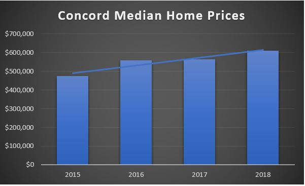
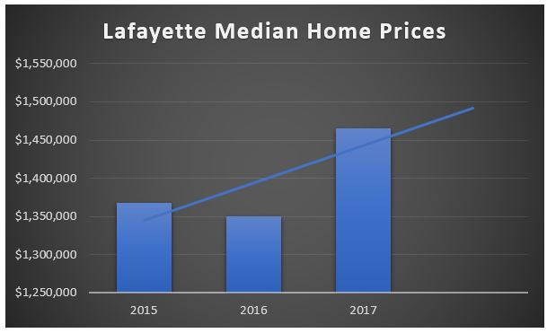
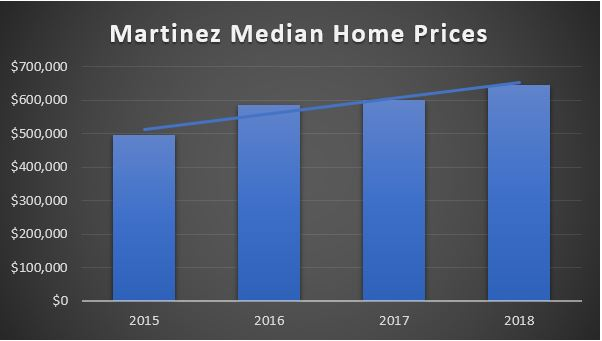
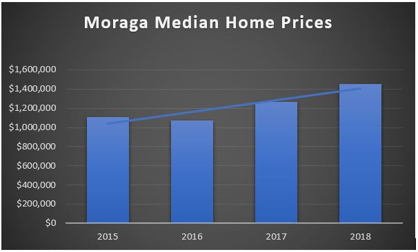
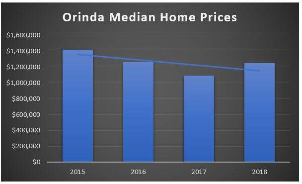
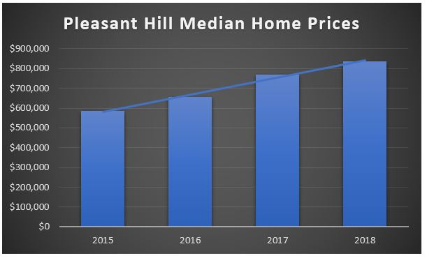
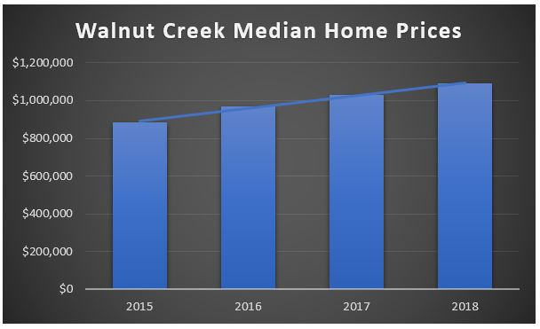

-
Concord is the largest city in Contra Costa County, California. At the 2010 census, the city had a population of 122,067 making it the 8th largest city in the San Francisco Bay Area. Founded in 1869 as the community of Todos Santos by Salvio Pacheco, the name was changed to Concord within months. The city is a major regional suburban East Bay center within the San Francisco Bay Area, and is 29 miles east of San Francisco. The focal point of downtown Concord is Todo Santos Plaza, which encompasses an entire city block and is known for its farmers market, free summer concerts, and large number of surrounding restaurants. Much of the area immediately around downtown has recently been redeveloped, with new high-density apartment and condominium projects to take advantage of the proximity to public transportation and to the area surrounding the park.
-

Exploring Lafayette from Dudum Real Estate Group on Vimeo.
Lafayette was named after the Marquis de La Fayette, a French military hero of the American Revolutionary War. Today Lafayette is known for its pastoral rolling hills, good schools, and wealthy inhabitants. In 2016, the median household income in Lafayette was over $140,000, more than twice the statewide average and about two and half times the national median. The city is part of the greater San Francisco Bay Area and has its own station on the BART public transit system. Lafayette is situated between Walnut Creek, Moraga, and Orinda, and, together with the latter two towns, is considered locally as part of "Lamorinda".
-
Martinez's downtown is notable for its large number of preserved old buildings and antique shops. Martinez is located on the southern shore of the Carquinez Strait in the San Francisco Bay Area, directly facing the city center of Benicia and the southeastern end of Vallejo, California. Martinez was the home of naturalist John Muir from 1880 until his death in 1914. He was buried about a mile south of the building that is now the John Muir National Historic Site. Also nearby is the Vicente Martinez Adobe, built in 1849 by the son of Ygnacio Martinez. The first oil refinery in the Martinez area was built in 1904 at Bull's Head Point, a then-unincorporated waterfront area two miles east of the downtown district. Although the common perception of Martinez is that of a refinery town, given the view from Highway 680 across the Shell refinery from the Benicia–Martinez Bridge, the city is in fact largely surrounded by water and regional open space preserves. The Martinez Regional Shoreline bounds the city to the north along the Carquinez Strait. Carquinez Strait Regional Shoreline includes the Franklin Hills west of downtown, stretching west to the unincorporated community of Port Costa and the town of Crockett. Briones Regional Park borders the Alhambra Valley to the south. Waterbird Regional Preserve and the McNabney Marsh border the city and Highway 680 to the east. Martinez's location at the east end of the Carquinez Strait as it widens to Suisun Bay includes dramatic water views stretching to the Sierra range. From surrounding ridge tops views stretch to nearby Mount Diablo, Mount Saint Helena, Mount Tamalpais, and others.
-
Moraga was first inhabited by the Saklan Indians. Joaquin Moraga was the grandson of José Joaquín Moraga, builder of the Presidio of San Francisco and founder of the pueblo that grew into the city of San Jose. Joaquin's father Gabriel Moraga was also a soldier, and an early explorer who named many of the state's rivers, including the Sacramento and San Joaquin. Moraga is located on the 1835 Mexican Land Grant Rancho Laguna de los Palos Colorados given to Joaquin Moraga and his cousin, Juan Bernal. Part of that grant was the property today known as Moraga Ranch. The Moraga Adobe has been preserved, and is located in neighboring Orinda. Joaquin Moraga Intermediate School, a middle school in Moraga, bears his name. In the first half of the 20th century, the line of the Sacramento Northern Railroad ran through Moraga; much of the old right-of-way is now part of the popular Lafayette-Moraga Regional Trail. Saint Mary's College of California moved to Moraga in 1928. Moraga is home to the grade schools of Los Perales Elementary, Donald L. Rheem School, Camino Pablo School, and Joaquin Moraga Intermediate School; Campolindo High School, and Saint Mary's College of California, a private college. In 2011 Moraga was named a top city to live and learn in. The Saklan School (formerly known as Saklan Valley School and The Carden School of Moraga), a private elementary school founded in 1954, is also located in Moraga. It is a co-educational school with around 155 students from preschool to 8th grade. The school is accredited by the California Association of Independent Schools (a member of the National Association of Independent Schools), and the Western Association of Schools and Colleges. It has a maximum class size of 16. Moraga's only public high school is Campolindo High School, although some Moraga students choose to attend Miramonte High School, located just across the town border in Orinda. Both schools are part of the Acalanes Union High School District, which encompasses Moraga, Lafayette, Orinda, and parts of Walnut Creek. Orion Academy is a private secondary school for students with conditions such as Asperger syndrome, Attention Deficit-Hyperactivity Disorder (ADHD), and nonverbal learning disorder.
-
Orinda was ranked the second most friendly town in America by Forbes. The city is located just east of the city of Berkeley and is home to many affluent suburban professionals who commute to downtown Oakland, San Francisco, and Walnut Creek. Its location provides for a more rustic landscape, and Orinda's many parks and trails make it a destination for many Bay Area hikers and naturalists. Orinda's popularity as a year-round residence grew after the 1937 completion of the Caldecott Tunnel, which provided easier access to the west. Bisected by California State Route 24 and framed by its rolling oak-covered hills, the city of Orinda was incorporated on July 1, 1985. The Oakland hills often block the cool foggy conditions that can be seen in Oakland and the innerbay. In the summer, fog can spill over the Oakland hills, cooling off the area. Heatwaves from the inland areas can be felt much more in Orinda than in Oakland and the innerbay during the summer. In the winter, Orinda often sees more precipitation than surrounding areas because of its higher elevation. Snowfall is rare but not unheard of. Orinda has four public elementary schools: Sleepy Hollow Elementary, Wagner Ranch Elementary, Glorietta Elementary and Del Rey Elementary. Orinda Intermediate School is the only middle school. Together, these five schools comprise the Orinda Union School District. The town's only high school, Miramonte High School, is a part of the Acalanes Union High School District. Both districts are noted for their academic excellence. Each district is the highest ranked in California in its category according to the state Academic Performance Index. Miramonte consistently has a high graduation rate of 99%-100%. The community support for education allows the high school to attract and retain very qualified teachers.
-
 It was incorporated in 1961. Pleasant Hill is the home of College Park High School, Diablo Valley College, John F Kennedy University, the Pleasant Hill Library and administration offices for the Contra Costa County Library system, and the Pleasant Hill Recreation & Park District. Elementary schools include Fair Oaks Elementary, Gregory Gardens Elementary, Pleasant Hill Elementary, Sequoia Elementary, Strandwood Elementary, and Vahalla Elementary. Middle Schools include Pleasant Hill Middle School, Sequoia Middle School, and Valley View Middle School. High school is College Park High School. Private Schools include Christ The King and Pleasant Hill Adventist Academy. There are plenty of parks and open spaces for hiking and outdoor activities in Pleasant Hill, 10 in total. For most of its history, Pleasant Hill did not have a true downtown or Main Street. In 1991, the city began planning the redevelopment of the area around the intersection of Monument and Contra Costa boulevards. In July 2000, Downtown Pleasant Hill finally opened. The privately owned and operated outdoor shopping center was designed to resemble a typical small Main Street. Pleasant Hill used a system of environmental planning at a relatively early stage of its modern growth. Notably the city authorized a study in the 1980s of hillside development, which included detailed mapping of biota, geotechnical hazards, sound levels and other environmental constraints. These studies were used to establish appropriate zoning and development densities for all the principal undeveloped hillside areas within the city.
-

Explore Walnut Creek from Dudum Real Estate Group on Vimeo.
Walnut Creek serves as a hub for its neighboring cities because of its location at the junction of the highways from Sacramento and San Jose (I-680) and San Francisco/Oakland (SR-24) and its accessibility by BART. Its active downtown neighborhood features hundred-year-old buildings and extensive high-end retail establishments, restaurants and entertainment venues. Walnut Creek owns more open space per capita than any other community in the state of California. In 1974, Walnut Creek voters approved a $6.7 million bond measure that allowed the city to purchase 1,800 acres (730 ha) of undeveloped hillsides, ridge lines, and park sites. Walnut Creek owns parts of Lime Ridge Open Space, Shell Ridge Open Space, Acalanes Ridge Open Space, and Sugarloaf Open Space. The East Bay Regional Park District operates Diablo Foothills Regional Park and Castle Rock Regional Recreation Area, both in Walnut Creek. Walnut Creek is transected by the Iron Horse Trail (running north/south) through its downtown, as well as the Contra Costa Canal Trail (running east/west) at the north end of the city. Both these trails, in addition to city bike lanes, make bicycle transportation feasible for both recreation and an alternative commute. Walnut Creek residents attend schools in five public-school districts.[19] The Walnut Creek School District (K–8) has 5 elementary schools, one magnet school(K-8), and one middle school in the city. Some residents are served by schools from the Mount Diablo Unified School District (K–12), the Acalanes Union High School District (9–12), the San Ramon Valley Unified School District (K–12), and the Lafayette School District (K–8). In 2012, the city was listed among the 10 best places to retire in the U.S. by CBS Money Watch and U.S. News. There is a lot of culture in Walnut Creek including Bedford Gallery, California Symphony, Center Reperatory Company, Civic Arts Education, Diablo Ballet, Festival Opera, and Lesher Center for the Arts.